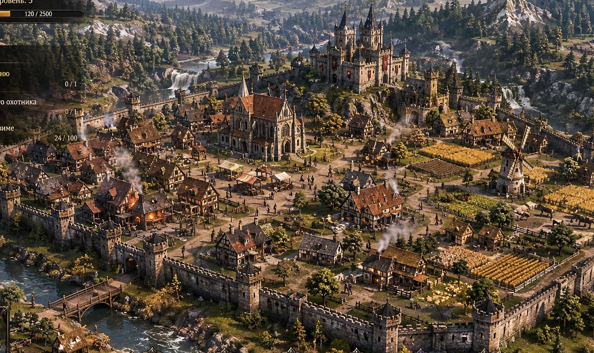

Долина Серого ВолкаДень 1 · Раннее утро
Уровень 1
0 / 100 опыта
0 / 100 опыта
📜 Задача старосты
Построй лесопилку и обеспечь деревню древесиной.
Построй лесопилку и обеспечь деревню древесиной.
🏘️ Поселение
Небольшая деревня у подножия старого леса. Впереди много работы.
🛠️ Действия правителя
📖 Летопись
• Ты принял власть над Долиной Серого Волка.
💾 Сохранение
Прогресс автоматически сохраняется на этом устройстве. Не очищай данные браузера, если хочешь сохранить поселение.